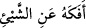
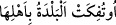
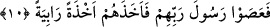

kelimesinin zıddıdır. Kırâat imamlarından Ebû Amr, Yakup ve Kisâî âyetteki “kablehû”
kelimesini “kıbeluhû” şeklinde okumuşlardır. Bu takdirde kelimenin mânâsı; “Fir’avun
ve onunla birlikte bulunan Kıptiler ve Mısırlılar” demek olur.
Altı üstüne getirilen beldelerden maksad, yukarda işâret edildiği üzere Lût kavmidir.
Yâni o kavmin yaşadığı köylerin halkıdır. Çünkü bu kelime, daha önce geçen “Fir’avun
ve ondan öncekiler” ifâdesine atfedilmektedir. “Mü’tefikât” kelimesini incelemek
gerekirse; Arapçada “__WORD__/efekehû ani’ş-şey’i dendiğinde “filanca falanı o
şeyden çevirdi” mânâsı kasdedilir. “__WORD__/U’tufiket el-beldetu bi ehlihâ”
dendiğinde ise “falan belde, halkı ile birlikte altüst edildi” demek istenir. Allah da, Lût
kavminin yaşadıkları yerleri onların başlarına geçirdiğinden kendilerine “mu’tefikât”
yâni “altı üstüne getirilen beldeler” halkı denilmiştir. Şu hâlde onlar, yere batırılmak
sûretiyle “munkalibât” olmuşlardır. Lût kavminin yaşadığı beş adet köy idi. Bunların
isimleri; Sa’be, Sa’de, Amra, Düma ve Sedum’dur. Sedum köylerin en büyüğü idi. Bu
ifâde de, ta’mîmin ardından –sözü tamamlamak için- tahsis kabilindendir. Çünkü Lût
kavmi, dünyada kendilerinden önce hiçbir kimsenin işlemediği o, çirkin fiili işlemişti.
“Hatâ” şeklinde tercüme edilen “hatîe” kelimesinin başındaki “ba” harf-i cerri,
mulâbese ve fiile geçişlilik sağlamak içindir. Birinci ihtimal budur. Buna göre âyetin
mânâsı; “Fir’avun, ondan öncekiler ve altı üstüne getirilen beldeler halkı hep o hatâyı
veya gafleti yahut büyük hata olan fiilleri işleyegeldiler” demektir. O büyük hatânın
içerisinde, öldükten sonra dirilmeyi ve kıyâmeti inkâr etmek de vardır. “Hatîe”
kelimesi, birinci anlama göre -tıpkı âkıbet gibi- masdardır. Son iki takdire göre mahzûf
bir mevsûfun sıfatıdır. Arapçada “hatıe” kalıbı nisbet ifâde eder. Fakat daha öncelikli
ihtimâl, bunun mecâz-ı aklî olduğu şeklindedir.
10. Böylece Rablerinin peygamberlerine karşı geldiler, O da onları pek şiddetli bir
şekilde yakalayıverdi.
“Böylece Rablerinin peygamberlerine karşı geldiler.” Yâni her ümmet, kendi
peygamberine, işledikleri kötü fiili kendilerine yasakladığı esnâda karşı geldi. Âyette
tekil olarak yer alan “rasul” kelimesi burada çoğul anlamındadır. Zira Arapçada “feûl”
ve “feîl” kalıplarında gelen kelimeler için müzekkerlik ve müenneslik ile tekillik ve
çoğulluk aynıdır. Bu âyet-i kerîmede çoğul olan ümmet ile yine çoğul olan peygamberler
karşı karşıya getirildiğinde, birinci çoğulu oluşturan tekler, karşı gruptaki çoğulu
oluşturan teklerle karşı karşıya gelir. Bir başka ifâdeyle burada “her ümmete bir
peygamber” kasdedilmiş olur. Şu hâlde buradaki izâfet “ahd” için değil cins için olmuş
olur.
“Bunun üzerine O da” Allah Teâlâ da “kendilerini şiddetli bir şekilde” şiddetli bir